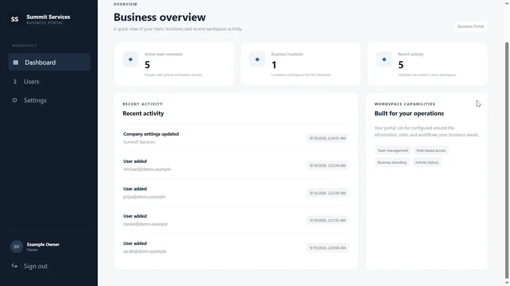
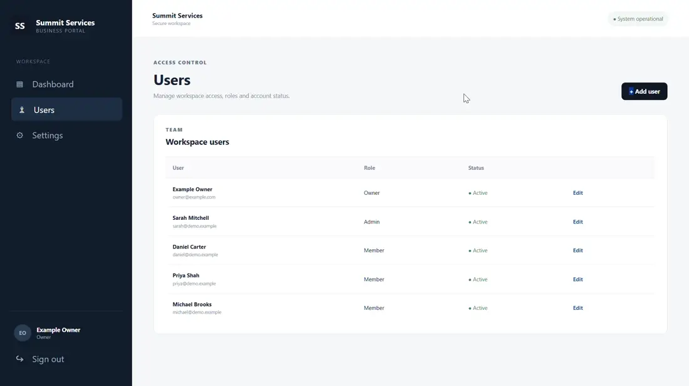
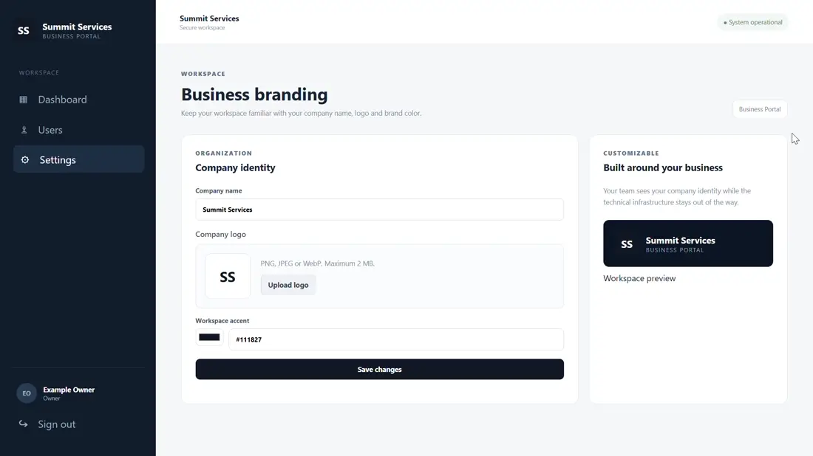

Account and company boundaries
The FastAPI backend uses database-backed users, role checks and a company context for business records. The interface can hide controls, but access decisions must still be enforced by the server.
I built a reusable foundation for business applications: authenticated users, company-specific records, role-aware administration and a consistent dashboard workspace. The aim was to solve the common infrastructure first, so later applications could focus on their own workflows.
A dashboard can display useful figures while leaving basic questions unanswered: who is allowed to view a company's records, who can manage accounts, and how administrative changes are tracked? Hiding controls in the interface is not enough to enforce those boundaries.
A dependable application needs consistent identity, company context and permission checks before client-specific workflows and reports are added.
The recording moves from the business overview to workspace users and company branding. It demonstrates the application shell rather than a customer-specific analytics deployment.



The FastAPI backend uses database-backed users, role checks and a company context for business records. The interface can hide controls, but access decisions must still be enforced by the server.
SQLAlchemy models and Alembic migrations define the company, location, user and audit records. PostgreSQL is the intended production database; SQLite supports local development and tests.
React and TypeScript provide an application layout with dashboard, user-management and company-settings screens, while the server remains responsible for authoritative data changes.
Technology: Python · FastAPI · SQLAlchemy · Alembic · React · TypeScript · Vite · PostgreSQL
Authenticated company claims are checked against active database users, and user list/update queries are scoped to their organisation.
User-update logic prevents disabling or demoting the last active Owner. Owner/Admin roles control account administration.
The archived initial starter has a health-endpoint test, not a comprehensive standalone test suite. The foundation evolved in later work; I do not attribute those later tests to this early snapshot.
The reusable foundation had to keep identity and tenancy separate from any one business domain. I modelled company, user, location and audit records so operational modules could extend the platform without changing its core assumptions.
I would strengthen the standalone starter with focused role and tenant-isolation tests, a migration-based deployment procedure and a better browser-session strategy before exposing it to public traffic.
The implementation is maintained privately by Ndlovu Business Technologies. The portfolio presents the engineering work without distributing the proprietary source.